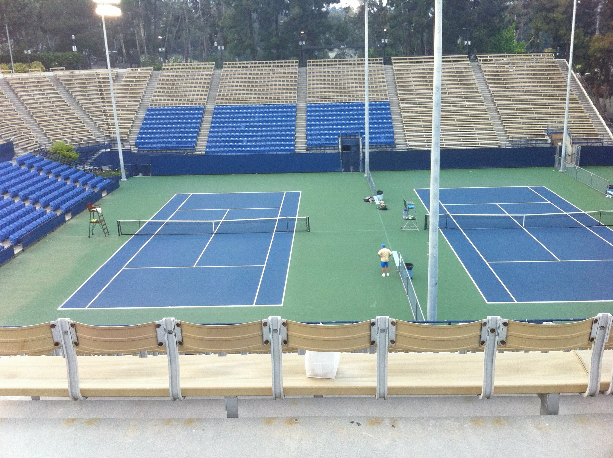
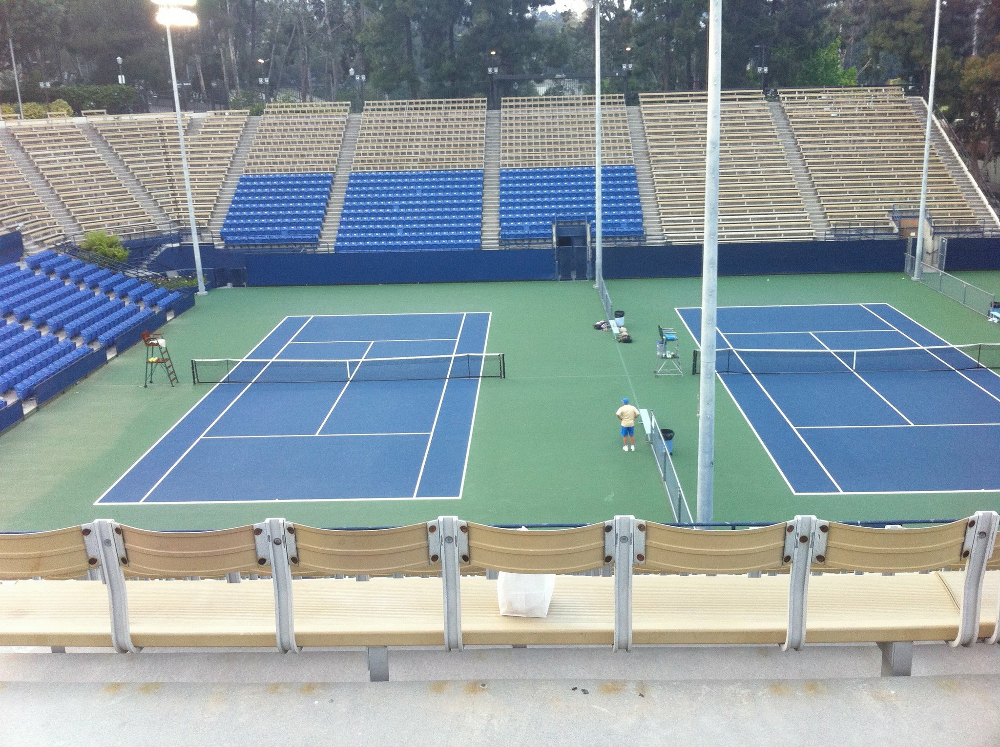

Billy Martin never would have brought up the fact that he’d reached the quarterfinals at Wimbledon in 1977. But when his son, Travis, suggested that the two of them go to Wimbledon, Billy explained that, as a former quarterfinalist, he’d received – and turned down – many invitations to sit in the tournament’s prestigious Royal Box.
“I was like, ‘You never told me this?’” Travis said.
But it’s nothing new for Travis to hear about Billy’s playing days in roundabout ways. Every time they attend a tennis event, where everyone knows Billy, Travis finds out more about his dad’s career.
“We can’t even walk through a room without having to stop to talk to every single person,” Travis said. “I’m there and I’m hearing stuff and I’m like, ‘What the heck? He would never tell me that.’”
Sometimes, when Travis asks, Billy will share a brief clip of his playing career, only to quickly change the subject.
Through the years, though, Travis, now a junior on the men’s tennis team, has pieced together his father’s story.
Martin’s story is long and storied, and his UCLA tenure as head coach is greater than the average age of a current student. 23 years has passed since he became head coach and the accolades he has accumulated are numerous – one national championship, 11 conference championships, 42 All-Americans, one national coach of the year award, and four conference coach of the year awards.
On top of that he has my the round of 16 in the NCAA’s every single year he has been coach, the one to do so.
“With his teams there is so much consistency,” said USC men’s tennis coach Peter Smith. “Every year they are first and second in the conference, and every year they’re top five in the country.”
"If there was ever a coach whose induction to every college tennis hall of fame is guaranteed with an exclamation point, this is the guy."
Glenn Toth, Former Senior Associate Athletic Director and Sports Supervisor for UCLA tennis
And Wednesday afternoon, after the men’s tennis team blanked the USF 7-0, Martin earned his latest accolade, his 500th career win, setting himself apart as one of winnest men’s tennis coaches in history.
Next Jimmy Connors or not, Billy Martin didn’t make for a perfect Goliath. He wasn’t big, but rather a quick, heady player who Bassett described as the most physically fit in the country. He didn’t miss shots, he made opponents beat him.
But now George Hardie was about to do just that – beat the great Billy Martin – and it was quite the David-and-Goliath story.
Hardie, an SMU senior seeded 11th in the NCAA singles tourney, had steamrolled through the first two sets of the 1975 NCAA Final, dropping just one game to the top-seeded Martin, a UCLA freshman hailed as the next tennis great.
Martin, playing in his 14th match in the past six days, was physically and mentally spent, and the crowd at the H.E. Butt Tennis Center in Corpus Christi was rollicking as their Texas-based underdog cruised towards the NCAA title. But some of Hardie’s SMU friends rollicked a little too hard, taunting Martin as he prepared for the third set.
“They were just mocking me, sort of to the point where it was just rubbing dirt in my face,” Martin said. “They were giving me all sorts of crud even though the match was pretty much over. And it irked me just enough that I got a little bit of a second wind.”
With nothing to lose, a pissed-off Martin went to work in the third set, taking control of play as Hardie began to swing more defensively. Martin took advantage of the no-ad scoring system, as Hardie recalls, winning four games on the deuce point as he won the set 6-3.
The players took a break between the third and fourth sets. When they returned, Hardie found that Martin, now with the momentum on his side, was “a different player.”
Martin won the next two sets with identical 6-3 scores to seize the national singles title and complete a comeback that still amazes his then-roommate and doubles partner Brian Teacher.
“I know how hard it is and how humiliating it is to lose the first two sets 6-0, 6-1,” Teacher said. “You are in such a deep hole that it's almost unimaginable. You can't even think of the hole you're in, you just have to slowly, point by point, claw your way out.”
The national title completed Martin’s tour de force through college tennis, as he turned pro after just one college season. He would never appear higher in the world rankings, however, than he did that March, when he was at No. 32. By the end of the year, he was out of the top 60 and wishing he’d stayed at UCLA.
“It was what I had dreamed about but at that time, there were so few young kids out on the pro tour, I really wasn't very happy out there quite honestly,” Martin said. “I think it was probably a big mistake not to stay at least another year.”
Leaving school had been the logical progression for Martin, though – since the time he was ten years old, he had committed himself fully to tennis, outworking everybody around him as he captured the 12-and-under national title, then the 14-and-under, the 16-and-under and the 18-and-under.
“You have to have a drive to want to be number one,” Teacher said. “His personality was all predicated on getting that spot and being the best he could...He knew what he wanted at a very early age and he was very driven and goal-oriented to get that.”
By the time Martin arrived at UCLA, Teacher said, his intense desire to improve permeated his entire life. He was all business, his life consumed 100 percent by tennis.
“I think he had a hard time joking around and having fun,” Teacher said. “He had fun on the court winning and stuff. But to me, it seemed like he didn't have any fun off the court.”
Martin eventually had to find fun off the court, as his hip problem limited his mobility and forced him off the pro circuit by the time he was 27.
His playing career over, Martin returned to UCLA as an assistant under his beloved old coach, Glenn Bassett. Bassett, who still talks to Martin almost every day, rubbed off on his pupil, whose competitive brashness mellowed as he grew up.
“One thing (Bassett) always seemed to do a really good job of – and I didn't, probably, as a younger coach – was staying calm and composed a little bit during matches,” Martin said. “I think I probably got a little bit more excited and my players could see, sort of, my anxiety or disappointment or all that. He was always so level-headed whether we were winning, losing or anything.”
Nowadays, people say the same of Martin, who took over the head coaching job from Bassett in 1994.
John Whitlinger, the Stanford coach from 2005-2014, said he admires the poise Martin showed in the 2013 NCAA Final, when his Bruins appeared to defeat Virginia before the umpire ruled that then-junior Adrien Puget’s foot had touched the net on the pennant-winning point. Puget went on to lose his match, and the Bruins fell in an excruciating 4-3 loss.
“The way Billy handled that was with class, I mean I would have been a wreck,” Whitlinger said. “The guy wins with class and loses with class.”
It’s happened a couple times. The score would be tied three all and the final match is being played on the back courts – a winner take all situation. Everyone from the crowd moves from the LATC stands to the fences of the courts four, five and six to watch in suspense. Fans, players and coaches all fixate on this last match – all except Martin.
He was seen out on court one, with his hand on the fence divider, staring at the stands. He didn’t onlook at the scoreboard. He would just listen to the crowd. It was the only way he knew who was winning.

 
